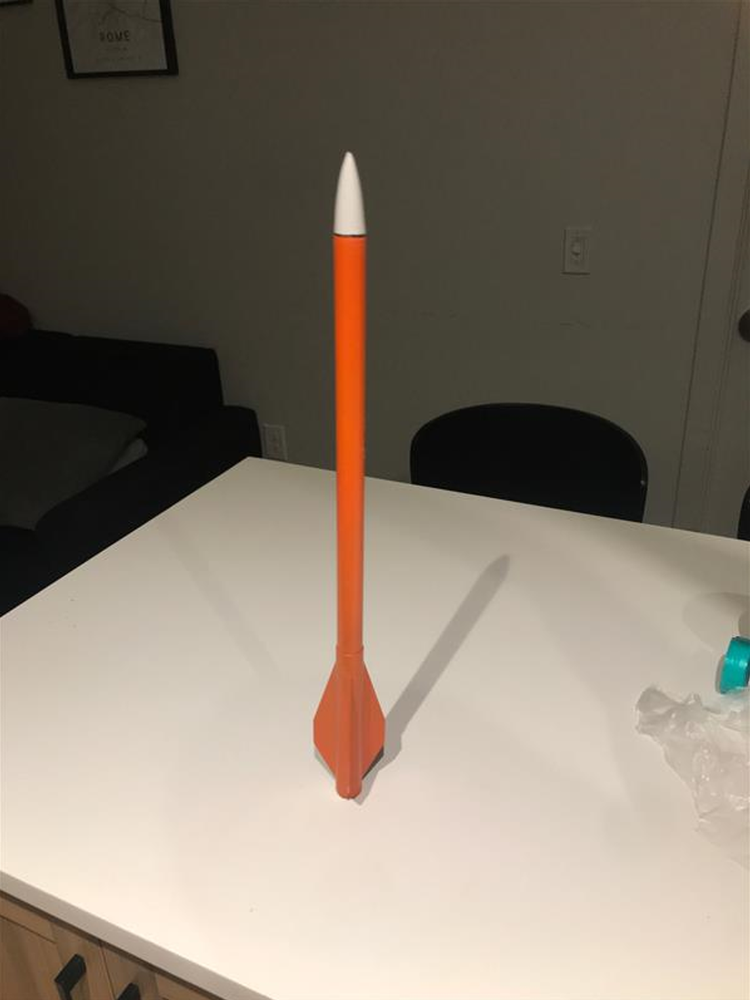
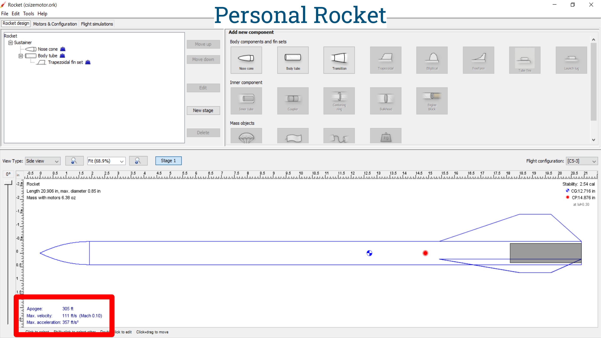
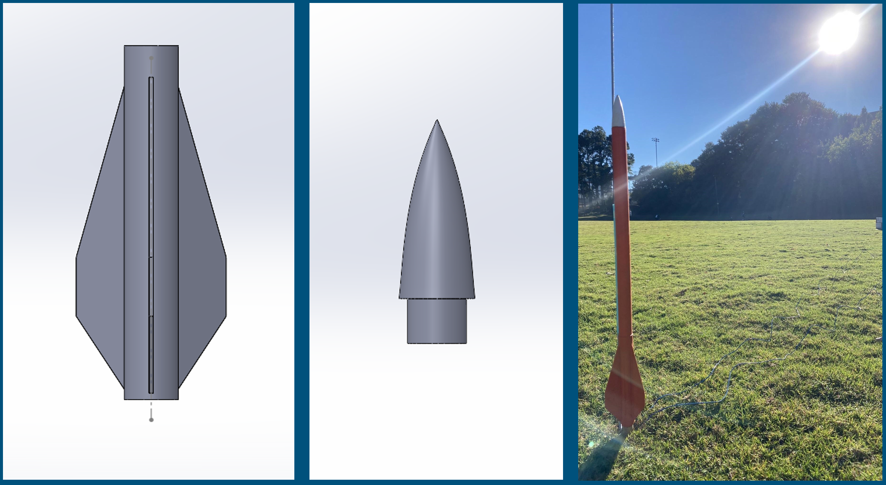
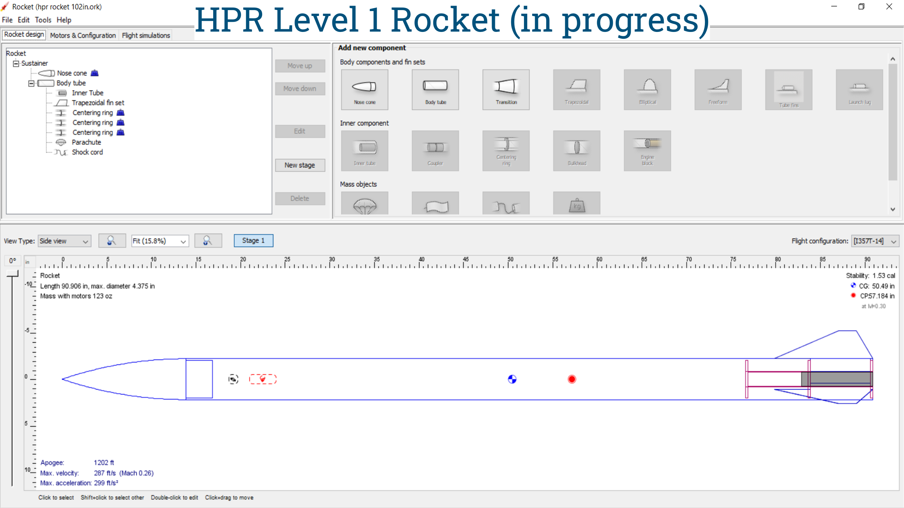
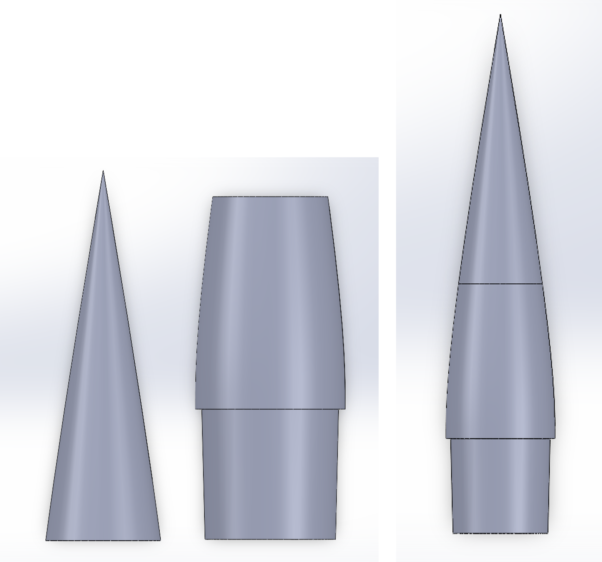
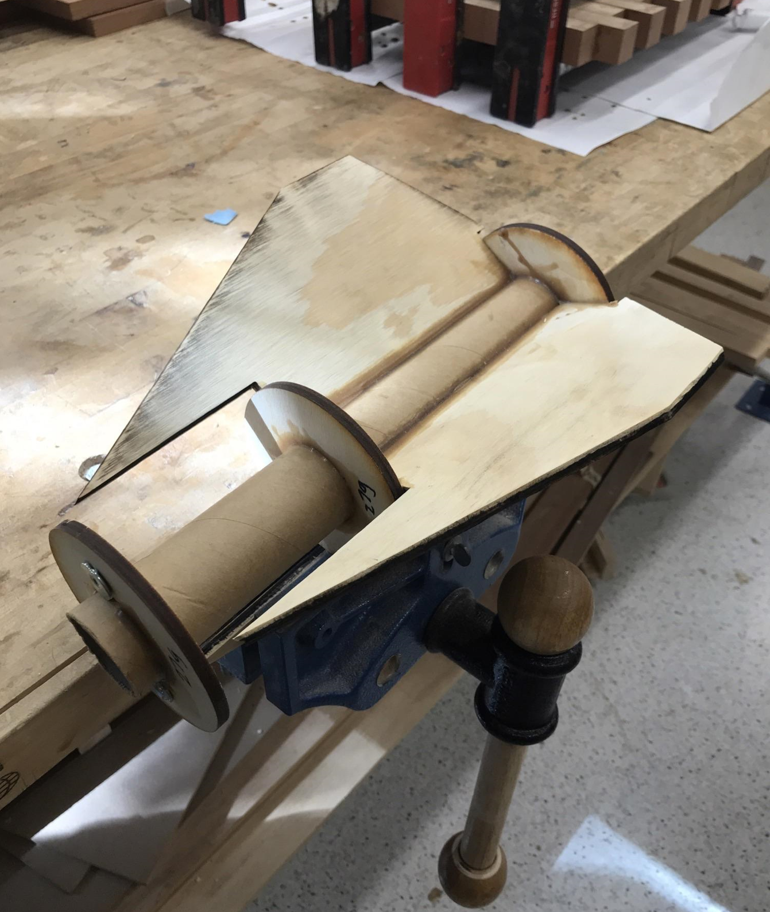

Rocketry
During college, I spent much of my free time seeing through a hobby in rocketry. I worked on 3 projects, one space shot vehicle with the Georgia Tech Experimental Rocketry club working to launch a 2 stage rocket to the Karman Line. I also worked on 2 personal rockets, one with Estes tiny rocket motors and one through High Power Rocketry to earn an L1 rocketry license.
Georgia Tech Experimental Rocketry Club
Space Shot Vehicle

Personal Home Built Rocket
I built this personal rocket as a design sprint to quickly build and fly my own rocket in under a week. I purchased 3 motors C-class motors (~10Nsec impulse) and while waiting for the shipment to arrive, I designed the rocket around the motor. The final rocket was painted orange and white to match the SLS rocket which was launching for the first time that same year.

I made the simulation of this rocket in a software called OpenRocket, which uses assigned masses and geometries to simulate the rockets maximum altitude and stability. This software is super lightweight and easy to use, and I highly recomend it to anyone looking to quickly put together a basic design for their rocket. One difficulty of this design is converging to a final design. Initially, I had to guess what weight the body tube, noze cone, and fins would be, and my design had to be flexible in order to account for changes in mass once I finally made my design and assembled it. My solution to this was to predict the mass of each component, and leave the length of the body and the mass of the noze cone variable so as to adjust the stability of the rocket right up until every variable was defined.

Finally I crafted the rocket. I used 1/2" PVC pipe as the body (which for clarity is dangerous to do, PVC shatters when broken which will cause shrapnel if the motor experiences failure), and 3d printed PLA for the nose cone and the fins. To adjust the mass of the nose cone as desired, I could adjust the infill of the nose to exactly what I would need. The nose cone press fit into the PVC pipe and the fin assembly interference fit and glued over the exterior of the pipe.

High Power Rocketry
I also was on my way to complete my L1 rocket certification with the completion of a scratch built rocket. The certification allows holders to launch rockets with impulse higher than 160N-sec, rockets heavier than 1500 grams, or launch rockets with multiple motors. To earn an L1, I was required to launch a class H or class I motor at an aproved NAR launch. The launch will require me to pass an inspeciton before flight and to successfully recover my launched rocket after a witnessed flight. The rocket must be returned for a final inspection to verify engine retention and minimal damage. I designed my L1 rocket to be comically tall with a 90 inch height and a meager apogee of 1200ft of course due to the added mass from the rocket length. I was able to create the design in open rocket, printed my nose cone, and even assembled my fin can. Unfortunately I was unable to finish the project as I left in spring semester for an internship.



Return to main